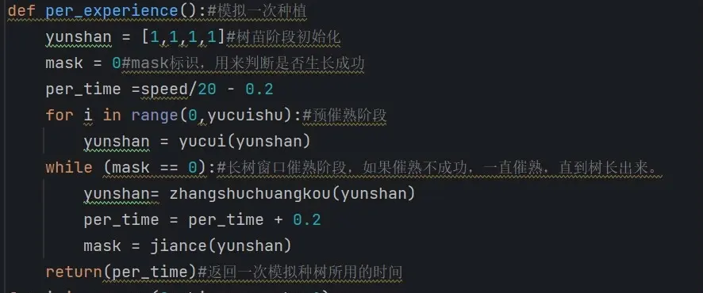
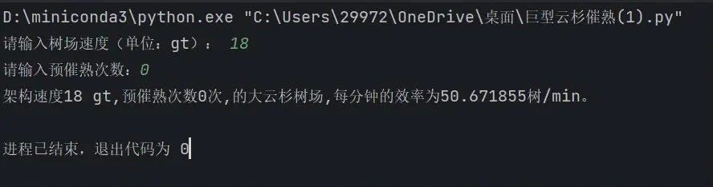
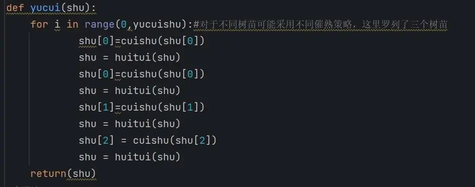
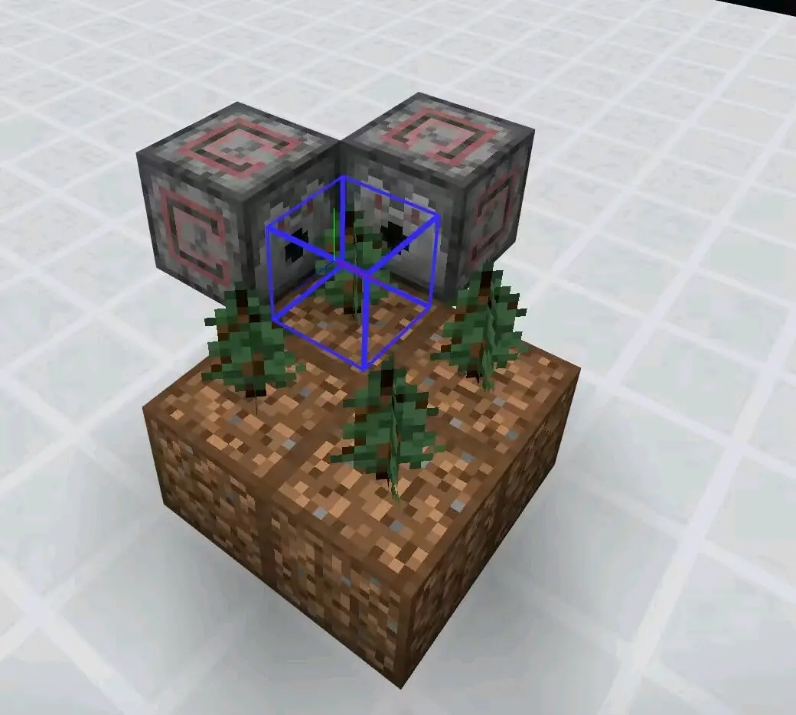
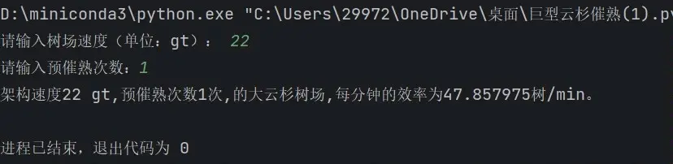
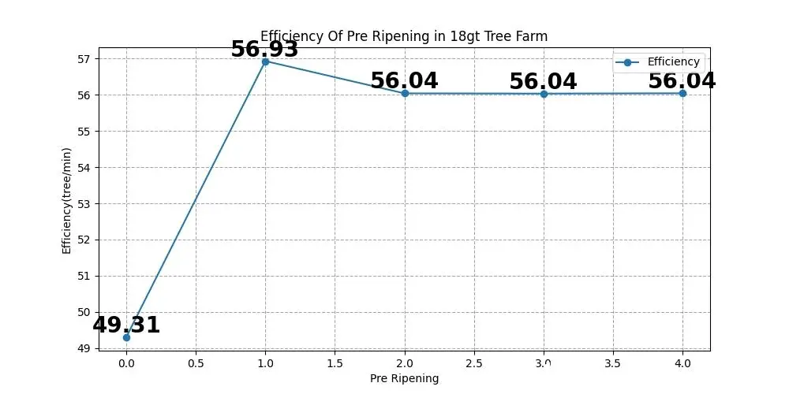
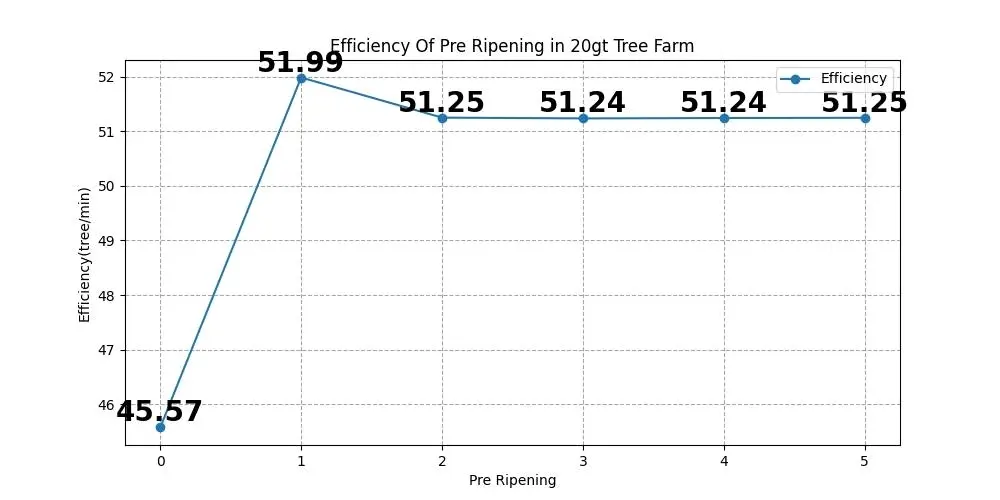
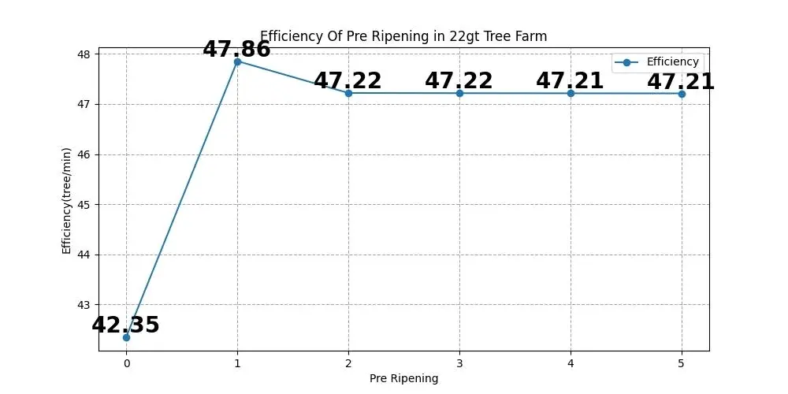
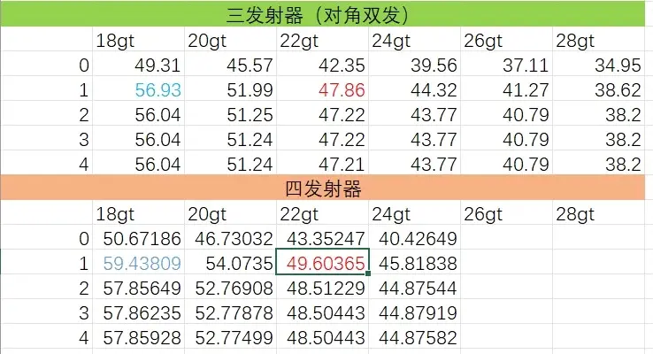

1.概论：
在之前大云杉生长机制初步探究之后，一直没有一个原型机来验证这个模型。加上lin佬对于代码的更改建议后，现如今从新拾起这份工作，来最终研究MCBE大云杉生长机制以及树厂理论效率的计算。首先感谢@linlin的代码修改意见，再次感谢@半枫沙的大云杉原型机。
MC 巨型云杉树的生长机制以及最优催熟策略 站内专栏 »半枫沙的22gt实用向大云杉原型机（视频未发布）
建模方法：pycharm，Excel
计算核心：程序模拟种树三百万次，误差允许 范围内逼近数值解。
声明：此建模忽略随机刻的影响，不考虑新催 熟理论（寸止催熟）的影响，仍然是传 统催熟方式。
2.正文：
（1）源代码解析：
首先，我们先对源代码进行叙述：

代码的核心部分
通过定义多个函数，包括“预催熟”，“催熟”，“生长检测”，“回退”，“模拟种树”等，结合大云杉生长机制，用Python写出来模拟种树程序，运行三百万次。输入预催熟次数和树厂速度后，返回效率（树/min）。

代码的print输出示例
那么我猜你看了上篇生长机制研究后，会说：“都是模拟种树，这次代码更改了何处呢？🤔＂

lin佬给予的更改意见
这次代码更改了预催熟部分，发射器每一次催熟都会进行树苗回退检查。以前的代码认为，树苗在1gt内顶多阶段变化一次（也就是说不考虑微时序。这是错误的🖕）。如今的代码考虑了微时序（允许树苗1gt内阶段变化多次。）这也源自于我在游戏里面的实验：

游戏里的实验
感兴趣的可以试一试：只让这俩发射器齐喷一次催熟，树苗真的可以长成大云杉树！这说明微时序内：这俩发射器发射骨粉是有先后顺序的，允许树苗阶段变化多次。😨
（2）代码正确性的验证：
@半枫沙制作的22gt三发射器（对角双发）齐喷催熟，在18gt一次三发射器齐喷催熟的树厂，经过tr的效率，效率达到了2930树/h，
tr结果找不到了，不过过程有人见证
代码经过计算，返回的效率是47.86树/min，

程序计算出的结果
折合成小时是2880树/h，总体误差控制在2％以内，考虑到tr测效率的一些因素，这说明代码计算出的基本符合游戏运行情况。
（3）大云杉催熟理论修正：
通过搜集数据，结合matplotlib.pyplot绘图，我们得到了一下图：

18gt三发射器对角齐喷催熟，预催熟和效率的关系

20gt的

22gt的
对此我们得到了新的结论！
1.大云杉树厂的效率随预催熟次数不是旧专栏的锯齿状趋近于某一个值，而是单调递减趋近于某一个值。
你没听错，是单调递减趋近于某一个值，这说明了大云杉树苗的独特生长机制：一个不行全体回退放大了预催熟的负面影响，这在单木是完全不同的。
2.预催熟次数对于效率的影响比较小。
这次的结果符合旧有印象：预催熟对于效率影响很小，只有0到1时候有巨大的提升。
3.仍然是预催熟一次效率达到最大值。
幸亏，旧专栏得出来的结论没被否定。
4.大云杉催熟具有微时序，而且齐喷催熟中，微时序顺序对于效率影响较小。
我曾调换过代码中发射器的催熟顺序，发现只有0.3树/min的差距，而且微时序貌似不可控，所以齐喷催熟下发射器催熟顺序影响不大。
（4）高速大云杉树厂效率计算
新写的代码可以计算出来不同催熟下的树厂效率，对此rss制作了一张图表，里面展示了三发射器（对角双发），四发射器，在18gt到28gt的效率，以供大家参考。

四发射器后面懒得算了😫，程序跑的是真的慢啊
（5）后记
至此，mcbe大云杉生长机制被验证完毕。巨云杉催熟理论完工。不过代码得到的并不是理论解，期待有其他的佬可以把数值解给出，这还是一个很大的难度。
代码给出的结果并不十分精确，因为是类似频率估计概率，结果有一定的浮动性，不过总体误差很小（模拟种树千万上亿次程序能算半小时，时间代价很大😇）。
特别鸣谢：
linlin（提供催熟代码更改）
半枫沙（他制作了树厂，提供了原型机）
ndt服务器（提供了原型机的测试）
furfur（提供了封面的高速大云杉）
数据不全，我会给出源代码，感兴趣的可以更改和跑一下来算效率。另外：Python算数是真的慢啊😫，程序跑一分多钟才能算出来一个结果。跑结果就快用了俩小时了😇